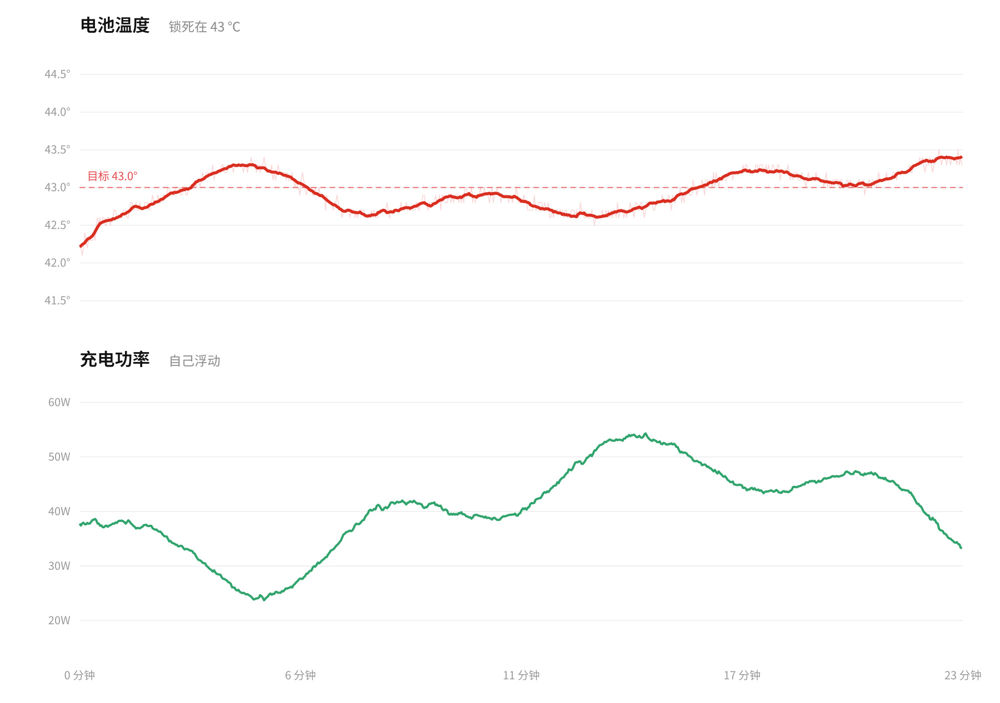
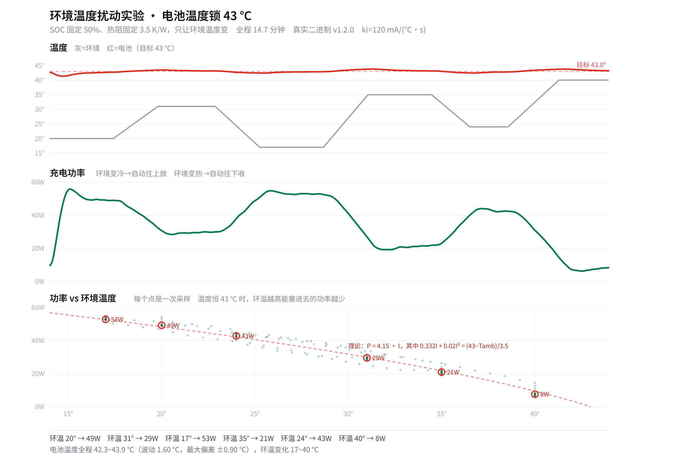
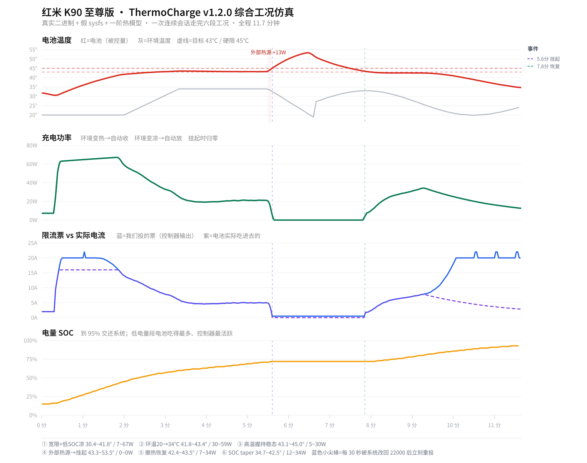
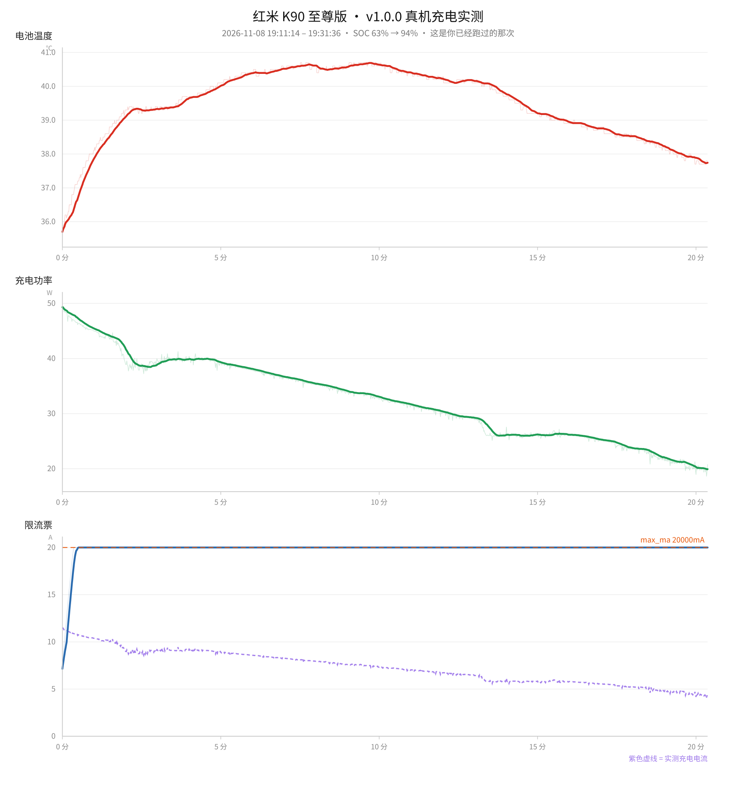

把电池温度锁死在目标值
充电电流自己浮动
普通快充是「能给多少给多少，热了系统再一刀切」。ThermoCharge 反过来：温度是目标，电流是手段。 电池凉 → 加大电流；电池热 → 收小电流；环境凉、散热好 → 自动跑出更高功率；握在手里、塞进被窝 → 自动降下来。

它做什么
适用于 Redmi K90 Ultra（warsaw / M332BF），基于 KernelSU。把电池温度作为被控量、充电电流作为控制量的恒温充电控制器。
温度即目标
默认目标 43 ℃。低于目标就加电流，高于目标就收电流，让功率围绕热平衡点浮动，而不是死磕某个固定瓦数。
永不更激进
限流写进内核 votable，聚合类型为 Min：我们只能把电流限得更小，永远不可能超过系统任何一道保护。
鲁棒控制律
温度变化率阻尼（kd 单位是秒），换个热设计的机型大概率不用重调参数。
退出必还原
SIGTERM / 崩溃 / 卸载三条路径都还原充电节点，不留后遗症。
三种故障，三条刹车
温度读不到、控制通道写不进、硬停充写失败——各自独立的检测与降流/挂起策略。
全程可观测
curve.csv 记录温度/电压/电流/功率/SOC/限流票，daemon.log 记录运行与错误。
为什么是这套控制律
充电中的电池是一个积分型被控对象：电流越大，温升越快。对积分对象做纯积分控制 = 双积分环节 = 必然振荡——这正是很多「性能模式」温度来回摆的原因。
关键设计：kd 的单位是秒（阻尼时间常数），不是传统 PID 的 Kd。因为 wn = √(g·ki)、ζ = kd·wn/2，当机型热参数 g 差一个数量级时，ζ 只按 √ 变化——这就是「以秒为单位」的价值。
实测鲁棒性（参数完全不动，只改被控对象）
| 工况 | 稳态均温 | 波动 | 超调 |
|---|---|---|---|
| 标称 | 42.88 ℃ | 0.30 ℃ | 0 |
| 热容 ×3 | 43.11 ℃ | 0.30 ℃ | +0.8 ℃ |
| 热容 ÷3 | 42.88 ℃ | 0.30 ℃ | 0 |
| 热阻 ×3（闷热） | 42.88 ℃ | 0.30 ℃ | 0 |
| 环境 35 ℃ | 42.88 ℃ | 0.30 ℃ | 0 |
| 环境 15 ℃ | 42.88 ℃ | 0.30 ℃ | 0 |
| 内阻 ×5 | 42.88 ℃ | 0.30 ℃ | 0 |
安全设计
Min 聚合保证「模块永远不可能比系统更激进」；v1.2.0 又把所有安全判断提到主循环最前面，任何分支都无法绕过。
Min 聚合：只会更保守
电流限制写进内核 votable（投票表），聚合类型是 Min——取所有投票者的最小值。
含义：我们只能把电流限得更小，永远不可能超过系统自身任何一道保护。电池 > 48 ℃ 停充、JEITA 判定不适合快充、适配器/PMIC 过热——系统都赢。模块不碰 wired_thermal_remove，不取消任何系统温控。
三种故障，三条独立刹车
| 故障 | 判定 | 动作 |
|---|---|---|
| 温度读不到 | 连续 3 拍 | 降 min_ma + 挂起输入 sensor_fault |
| 控制通道写不进 | 连续 3 拍 | 挂起输入 ctl_fault |
| 硬停充写失败 | 单次 | 不锁存，下一拍继续重试 |
通道故障挂起与过温挂起用两个不同标志记录，解除条件完全不同，避免通道坏掉后温度一降就误解除唯一刹车。
stop_handle_charge；不在未插电时写任何节点；不碰 wired_thermal_remove；不取消任何系统温控。仿真与实测
闭环仿真跑的是真实编译二进制（假 sysfs + 一阶热模型）。仿真不等于真机实测——请看下方诚实边界。



✅ 闭环仿真（真实二进制）通过 ✅ 综合工况仿真通过 ✅ 故障注入 10 用例全过 ✅ 真机跑过一次完整充电（但 PID 并未介入）
❌ v1.2.0 尚未做过真机充电实测 —— 当前版本仍是内测版。
安装
- 下载
thermocharge-v1.2.0.zip - KernelSU 管理器 → 模块 → 从本地安装 → 选择 zip
- 重启
重启后检查状态：
su -c '/data/adb/modules/thermocharge/bin/thermocharge status'
常用配置
配置文件：/data/adb/thermocharge/config.conf。改完重启，或热重载（发 SIGHUP）：
su -c '/data/adb/modules/thermocharge/bin/thermocharge set target_temp 42'
| 项 | 默认 | 说明 |
|---|---|---|
target_temp | 43.0 | 目标电池温度 ℃ |
hard_temp | 45.0 | 硬上限 ℃ |
max_ma | 20000 | 限流上限 mA（≈83 W） |
min_ma | 500 | 限流下限 mA |
ki | 120 | 误差每 1 ℃ 每秒调整电流 mA/(℃·s) |
kd | 40 | 阻尼时间常数（秒） |
风险与内测声明
• 长时间高温充电会加速电池老化，
target_temp 别设太高（长期用 38–40 ℃ 更划算）• 别在枕头上、被子里用高功率；不要为了测试而人为加热手机
• 出问题先
thermocharge restore，或 remove 模块重启• 本项目只针对 K90 Ultra 有线充电路径；无线充电未适配；v1.2.0 真机闭环尚未验证，项目状态为内测中
参与内测请先阅读 内测招募说明，按步骤记录数据并反馈。